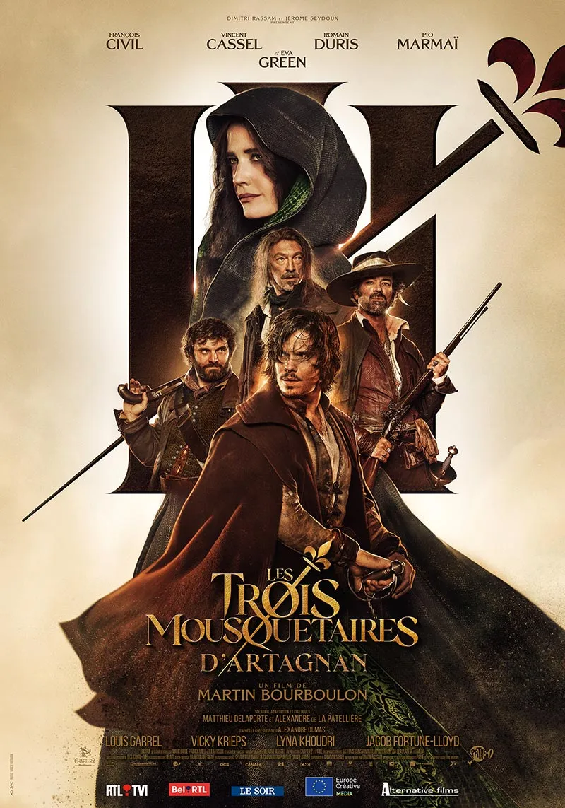
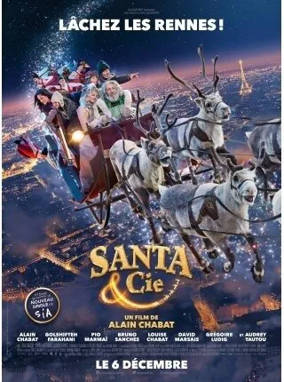
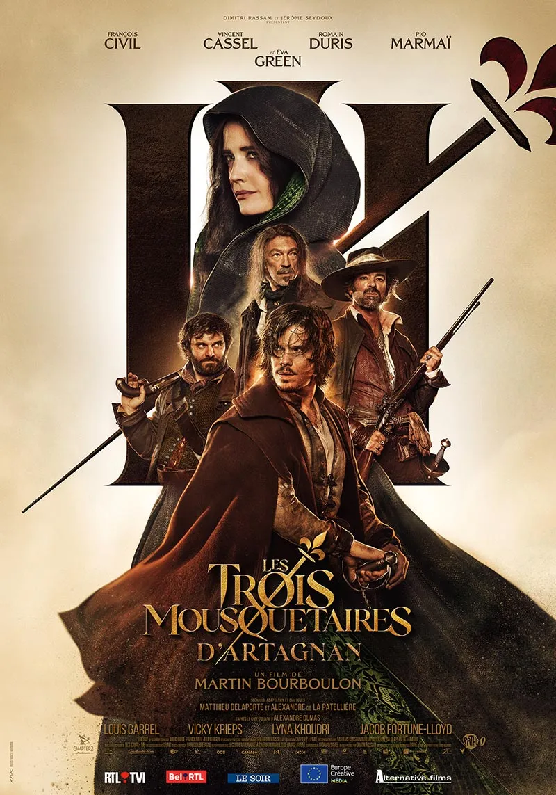
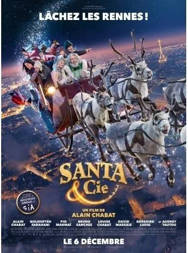

"Napoléon" est un film d'action épique qui retrace l'ascension et la chute de l'empereur français Napoléon Bonaparte, interprété par Joaquin Phoenix, lauréat d'un Oscar.Par le cinéaste légendaire Ridley Scott,
le film retrace l'implacable ascension de Bonaparte vers le pouvoir et son unique amour, Joséphine.
"Gods of Egypt" sorti en 2016 , est un film d'aventure fantastique qui mélange la mythologie égyptienne avec des effets spéciaux spectaculaires. L'histoire suit un jeune voleur,
Bek, qui s'allie avec le dieu Horus pour affronter Set, le dieu de la violence et du chaos, et sauver l'Égypte antique.
"Bullet Train" est un film d'action réalisé par David Leitch et est sorti en 2022. Il met en vedette Brad Pitt dans le rôle principal et
suit l'histoire de plusieurs tueurs à gages qui se retrouvent à bord d'un train à grande vitesse au Japon.Si vous êtes amateur d'action et de suspense, "Bullet Train" est un film à ne pas manquer.
"Le Voyage de Chihiro" (Spirited Away) est un chef-d'œuvre d'animation du réalisateur Hayao Miyazaki, sorti en 2001.
Ce film est salué pour sa beauté visuelle, sa profondeur émotionnelle et ses thèmes sur la nature humaine, en faisant une expérience cinématographique captivante pour tous les âges.
Milieu du XVIIe siècle. Originaire de Gascogne, le jeune D'Artagnan décide de monter sur Paris afin d'accomplir son rêve : entrer dans la compagnie des mousquetaires du roi Louis XIII.
Un jour, bien malgré lui, il provoque en duel trois des plus fines lames du royaume, Athos, Aramis et Porthos. La suite annoncée pour décembre 2023.
"Santa & Cie" est une comédie française réalisée par Alain Chabat, sortie en 2017. Le film met en scène Alain Chabat dans le rôle du Père Noël, confronté à un problème majeur :
une panne de la magie de Noël.Ce film offre une perspective amusante et originale sur l'esprit de Noël, avec des touches d'humour et de fantaisie.
 
